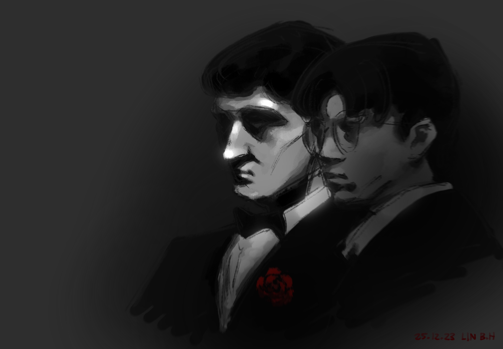

Godfather
25 · Dec · 2023
In a perfect illustration of the whimsicality of inspiration, I found myself unusually struck by a picture of my friend from a formal dinner. My mind conjured that famous screengrab of Vito Corleone from The Godfather - and I sought to replicate the sombre, unknowable mood.